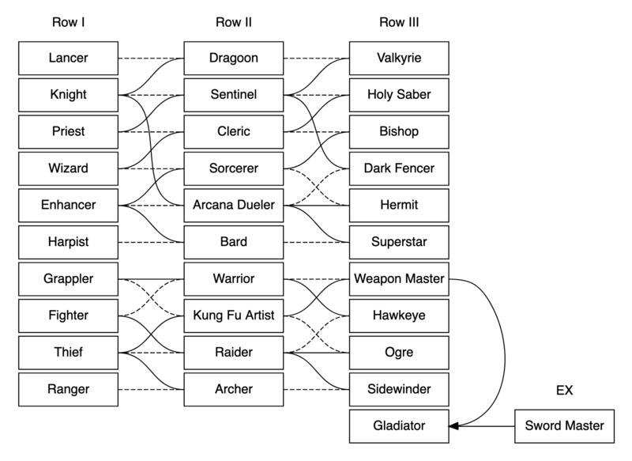
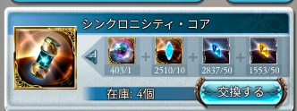
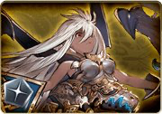
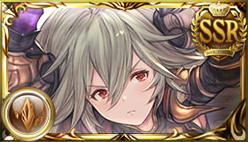

遊戲角色
主角
主角是GBF中最強大的萬能角，主角的職業非常的豐富，主角職業達到20級後能學會某些技能，且可以永久得到對應的一些屬性加成。
並且可以透過轉職來自由改變自己的技能，關於技能的設置，到C3及EX1為止只有4號位技能可自由設置。C4及EX2以上的職業為2~4位技能可自由搭配。
新人騎空士優先開出黑劍習得慘霧後再慢慢把其餘職業技能補完就好
關於新C4職業"機神"的解鎖。其他的C4職業要獲取都必須經過繁雜的職業武器製作任務獲取稱號來開取，但是這個職業例外，是最最優先取得的職業之一。
獲取方式如下。進入商店道具交換→アイテム/他→イベントその他→イベント限定報酬→STAY MOON
第一和第二個道具可在佐伊副本獲得，第三和第四則是相應武器素材化的武器碎片。
十天人
約每兩個月的星之古戰場活動所獲得的戰貨武器(天星器)所製作的人物。只要肝就能獲得的免費強力角色，所有天人都可以終突至五星並且突破上限到150等(雖然要花費大量時間素材及心力...)
五星100等的天人基本上可以說是對應屬性的強力角色了，一般來說各種天人的用途不盡相同，製作順序可以依照自己喜愛的屬性來做決定。
由於六周年活動已經下放到SideStroy了，可藉由"こくう、しんしん"來直接獲取第一個天人(不會獲得對應的天星器)
比較推薦的是換サラーサ，主要是要他的3技是白字傷害，對於周回速刷經驗值及轉世有很強大的功能性。
十賢者
五周年後實裝的非課金可獲得的強力角色，同十天眾一樣，製作需要花費大量時間及素材。劇情44章解鎖的轉世戰場，因每天獲得的轉世票有限，無法在短時間內製作完畢。
且大部分賢者都是在後備發揮作用，除了凱伊姆外製作的優先度不高。
生肖-十二神將
神將是新人騎空士相對容易取得的強力角色，主要是透過新手超得或月末天井獲取。
值得注意的是當年的新出的神將只可在年內獲得，之後就要隔一年以後才可獲得。
神將相當的強，有些甚至影響著無課方陣的強弱。
由羊開始至今，2022年已出到虎了。再來四個就撐完一輪了。當初以為一年出一個這遊戲應該會先倒XDD
角色系統
A: Limit Bonus
角色達到當前的最大等級之後，獲得的經驗會轉化為LB點數(36000經驗轉1點)，可藉由LB點數來強化各方面的能力。
可強化次數上限與Limit Bonus Class Rank掛勾，強化滿18次最少需要171點LB，使用久遠戒指後強化次數上限+10。
B: 覺醒等級
覺醒系統是使用一些素材，每個角色都可以強化的部分，強化效果為固定，目前可以強化到Lv8。
C: 強化道具
道具分為戒指及耳環兩種
戒指:可以透過戒指獲得2~4條的隨機強化。
耳環:類似於戒指的角色強化系統，不同的是戒指是全屬性角色通用，耳環則是各屬性對應。
久遠的戒指:可用在四象活動中獲得的クロム鋼，每20個交換一個久遠戒指。屬性是固定的且獨立。
久遠的戒指能獲取的數量為固定，截至2022年5月3日為止能獲取的數量為15個。